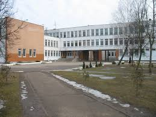
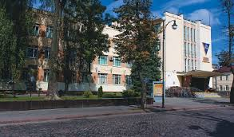

Date of birth : May 14, 1999 (age 19)
Live in Grodno, Belarus
Now works online in the field of
photography and content creation
for social networks of different brands.
Olso undergoes an internship in an IT
company for the role of QA Enginer
All 11 years she studied at the Gumnaziun number 9
with in-depth study of languages.
Studied French and English.
10 and 11 classes studied in the
profile "physical and mathematical" direction.

Since 2016 he is studying at the
Yanka Kupala State University of Grodno,
specialty is applied mathematics,
specialization is mathematical modeling.
Now finishes 3 course.
In 2020, plans to complete studying
and further develop in the field of IT.
